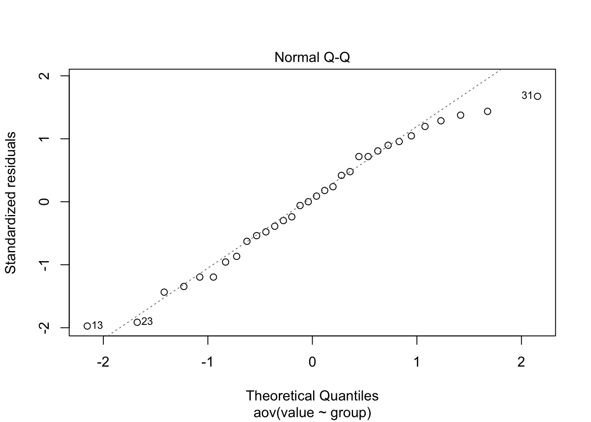
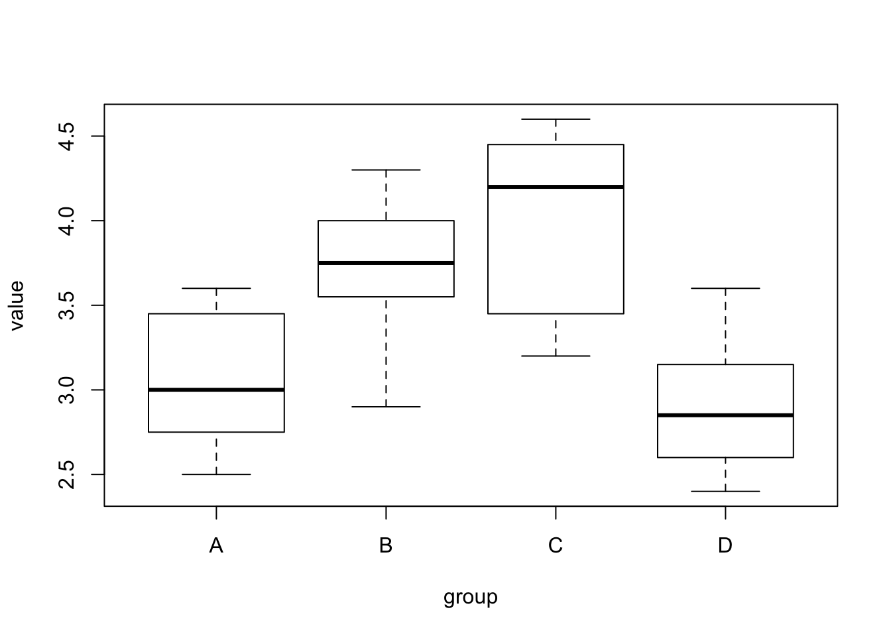

uri = paste0("./data/ex8-32.TXT")
hw8data = read.table(uri, header = T)
attach(hw8data)
hw8data=data.frame(value=c(A,B,C,D), group=rep(LETTERS[1:4], each=length(A)))hw8data.aov = aov(value~group, hw8data)
summary(hw8data.aov)## Df Sum Sq Mean Sq F value Pr(>F)
## group 3 6.621 2.2070 11.05 5.85e-05 ***
## Residuals 28 5.594 0.1998
## ---
## Signif. codes: 0 '***' 0.001 '**' 0.01 '*' 0.05 '.' 0.1 ' ' 1library(car)
leveneTest(value~group, data=hw8data)## Levene's Test for Homogeneity of Variance (center = median)
## Df F value Pr(>F)
## group 3 0.5647 0.6428
## 28The normal QQ plot indicates a normal distribution fits the residuals well.
plot(hw8data.aov, which=2)
TukeyHSD(hw8data.aov)## Tukey multiple comparisons of means
## 95% family-wise confidence level
##
## Fit: aov(formula = value ~ group, data = hw8data)
##
## $group
## diff lwr upr p adj
## B-A 0.6625 0.05232456 1.2726754 0.0294781
## C-A 0.9375 0.32732456 1.5476754 0.0013447
## D-A -0.1625 -0.77267544 0.4476754 0.8854051
## C-B 0.2750 -0.33517544 0.8851754 0.6132192
## D-B -0.8250 -1.43517544 -0.2148246 0.0049860
## D-C -1.1000 -1.71017544 -0.4898246 0.0001916plot(value~group, data=hw8data)
kruskal.test(value~group, data=hw8data)##
## Kruskal-Wallis rank sum test
##
## data: value by group
## Kruskal-Wallis chi-squared = 16.561, df = 3, p-value = 0.0008698